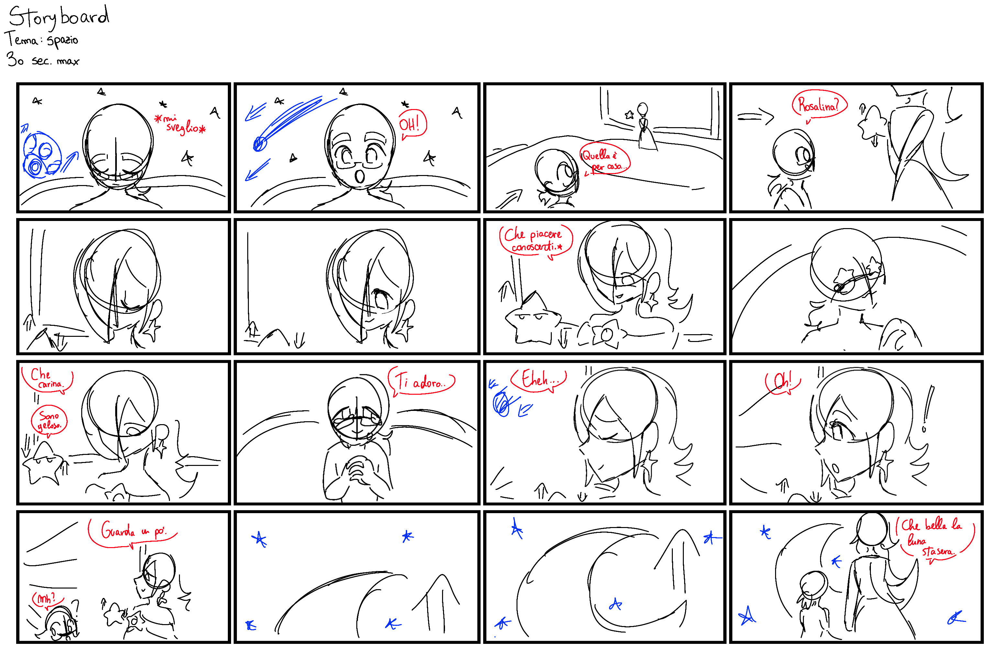

PREMESSA
“L'incontro” è un breve storyboard creato per il corso di
“animazione digitale”.
Il tema di questo progetto è
“spazio” e viene realizzato in
tecnica digitale.
Lo storyboard narra di questa
ragazza che si risveglia
improvvisamente in questo osservatorio circondato dalle
stelle, per poi notare una figura
a lei molto familiare.
Si tratta di un incontro tra una
scolaretta e una donna misteriosa
che, insieme, guardano il sorgere
della luna dopo una lunga giornata.
☾
✦ STORYBOARD ✦
Progetto: Animazion Digitale
Docente: Pennacchio Salvatore
Corso: NTA - ABA Catania
Storyboard: 16 frames, 00:30
2023
Lo storyboard è stato disegnato con l'ausilio di Photoshop
2022 e di svariate reference.
Dopo la creazione dello Storyboard,si passa alla parte più importante, l'animazione.
I frame sono stati creati grazie a Photoshop 2022 e animati con After Effects 2022.
Raccogliendo svariate musiche e sfx, mi sono aiutata con la tecnica dei keyframes sia per la parte audio, che per quella visiva, muovendo testa, occhi e articolazioni dei personaggi senza usare la tecnica frame by frame.
✦ VIDEO ✦